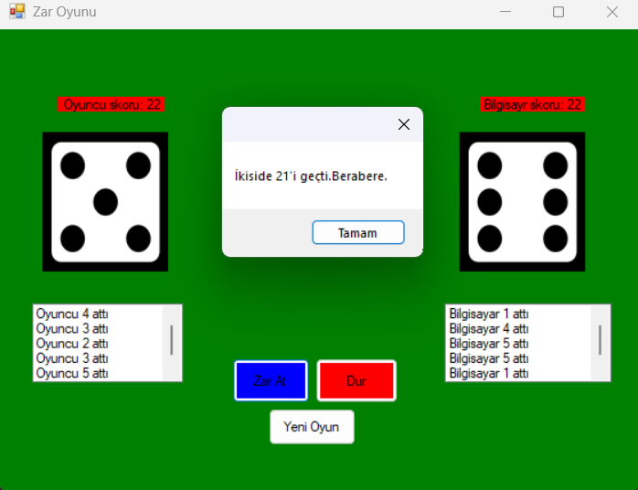
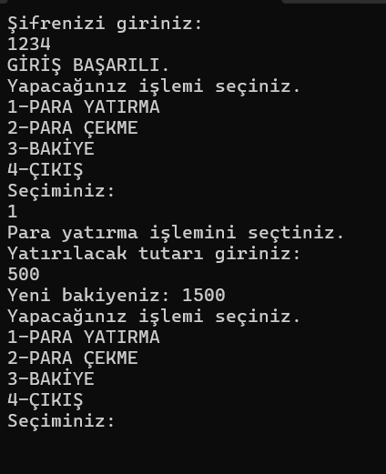

Merhaba, ben Eren. Bilgisayar Mühendisliği 2. sınıf öğrencisiyim. Yazılım dünyasına olan merakım, sistemlerin nasıl çalıştığını anlama ve yeni dünyalar inşa etme tutkusuyla başladı.
Şu an ağırlıklı olarak C# ve .NET ekosistemi üzerinde kendimi geliştiriyor, nesne yönelimli programlama (OOP) prensiplerini projelerime uyguluyorum. Siber güvenlik dünyasına olan ilgimle sistem güvenliği temellerini öğrenirken, aynı zamanda Unity ile interaktif deneyimler ve bağımsız oyunlar geliştirerek yaratıcılığımı kodla birleştiriyorum.
Sürekli öğrenmeye ve yeni teknolojileri keşfetmeye inanan, problem çözme odaklı bir mühendis adayı olarak, gelecekte global projelerde yer almayı ve karmaşık yazılım mimarileri üzerine çalışmayı hedefliyorum.

C# ve Windows Forms API kullanarak geliştirdiğim dinamik bir zar oyunu uygulaması. Bu projede olay güdümlü programlama (event-driven programming), rastgele sayı üretim algoritmaları ve gerçek zamanlı arayüz yönetimi üzerine odaklandım. C# dil yapısı ve Nesne Yönelimli Programlama (OOP) kavramlarını masaüstü ortamında uygulama konusunda temel yetkinliklerimi pekiştirdiğim bir çalışma oldu.

C# ile geliştirdiğim terminal tabanlı bir ATM simülasyonu. Bakiye sorgulama, para yatırma ve çekme gibi bankacılık işlemleri için koşullu ifadeler, döngüler ve durum yönetimi (state management) gibi temel programlama mantıklarını içerir. Bu çalışma, komut satırı arayüzünde güvenli ve mantıklı bir kullanıcı akışı oluşturmaya odaklanmaktadır.